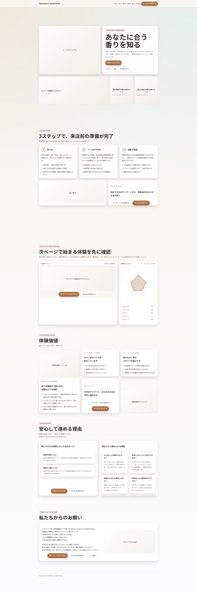
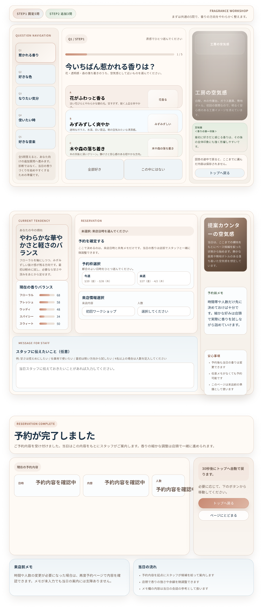

ワイヤーフレーム
ワイヤーフレーム作成方法
ページの目的：来店前のユーザーにサービス内容と体験の流れを短時間で理解してもらい、アンケート開始または予約へ自然に進めること。
ターゲット：香りづくりやフレグランスワークショップに興味はあるが、自分に合う香りの選び方が分からず不安を持つ初回訪問者。加えて、内容を把握したうえで直接予約したい再来店者。
ページに含めたい要素：ヘッダー、ヒーローセクション、サービス紹介、実績、CTA、フッター
ヘッダー
・配置する要素：ブランド名、ページ内ナビゲーション、主要CTAボタン、モバイル用メニューボタン
・推奨サイズ（相対的な比率）：画面高の約8〜10%。横幅はブランド2、ナビ5、CTA3程度
・配置の意図（なぜその位置か）：ページ全体の起点として最上部に置き、閲覧開始直後から「内容理解」と「行動」の両導線を見せるため。ブランド認知と予約導線を同時に担う。
ヒーローセクション
・配置する要素：メインビジュアル、サービス名、主見出し、説明文、主CTA、補足ポイント
・推奨サイズ（相対的な比率）：ファーストビューの35〜45%。画像5、テキスト5程度の横並び
・配置の意図（なぜその位置か）：最初の数秒でサービス価値を伝えるため。画像で世界観を見せ、見出しと説明で内容を理解させ、すぐ下にCTAを置いて次の行動へつなげる。
サービス紹介
・配置する要素：3ステップの流れ、質問ページのプレビュー、体験価値の説明カード
・推奨サイズ（相対的な比率）：ページ全体の40〜50%。流れ説明2、画面プレビュー2、価値訴求1の比率
・配置の意図（なぜその位置か）：ヒーロー直下で「何をするサービスか」「どのように進むか」を順序立てて理解させるため。判断材料を前半でそろえ、離脱を防ぐ。
実績
・配置する要素：index.html には実績件数や導入事例の明示はないため、代替として安心材料、FAQ、利用イメージを置く
・推奨サイズ（相対的な比率）：ページ全体の10〜15%。サービス紹介より小さく、補強要素として配置
・配置の意図（なぜその位置か）：価値理解の後に不安を解消するため。先に魅力を伝え、その後で「自分でも進められるか」を補強する順番が自然。
CTA
・配置する要素：アンケート開始ボタン、予約ボタン、必要に応じてトップへ戻るリンク
・推奨サイズ（相対的な比率）：各主要セクション末尾に小CTA、ページ終盤に大CTA。最終CTAは横幅の60〜80%程度で強調
・配置の意図（なぜその位置か）：理解の段階ごとに複数回行動機会を作るため。読了直後の意思決定点で強いCTAを置くことで、迷いを減らして次のページへ送れる。
フッター
・配置する要素：ページ名や簡易コピーなど最低限の締め情報
・推奨サイズ（相対的な比率）：画面高の5〜8%。本文やCTAより控えめ
・配置の意図（なぜその位置か）：ページの終端を明確にし、全体を締めるため。主要行動はその直前のCTAで完結させ、フッターは補助情報に留める。
トップページ

このトップページは、ファーストビューでサービスの世界観と目的を伝え、その後に体験の流れ、質問ページのプレビュー、体験価値、安心材料、最終CTAまでを縦方向に整理して見せる構成になっている。
最上部にはヘッダーを配置し、ブランド名、ページ内ナビゲーション、予約導線を常時表示する。これにより、ページを読み進める前でも「内容を見る」「すぐ行動する」の両方を選べる。
ヒーローセクションは大きなビジュアルとコピーを並べた2カラム構成で、世界観の訴求とサービス理解を同時に行う。見出し、説明文、CTAを近接配置することで、第一印象から行動までの流れを短くしている。
その下の3ステップ紹介では、アンケート、ベース作成、店頭調整という流れをカード形式で整理し、初回訪問者が体験全体をすぐ理解できるようにしている。複雑に見えやすいサービスを、段階に分けて単純化する意図がある。
質問ページプレビューのセクションでは、実際の次画面の見え方を複数デバイスで提示し、遷移後の体験を想像しやすくしている。これはクリック前の不安を和らげ、CTAの押しやすさを高めるための配置である。
体験価値のセクションでは、複数カードを用いてユーザーが得られる価値を言語化し、サービスの魅力を補強する。ヒーローで興味を持ったユーザーに対し、ここで納得材料を追加する役割を持つ。
後半には安心材料とFAQを置き、予約前の疑問を解消してから最終CTAへつなげている。価値訴求の後に不安解消を置く順番にすることで、読了時点で行動しやすい状態を作っている。
最下部のCTAセクションは大きく余白を取り、アンケート開始と予約の2導線を再提示する。ページ全体を読み終えた直後の意思決定点を受け止めるため、この位置に強い行動喚起を置いている。
下層ページ

クエスチョンページ：ユーザーが直感的に香りの好みを選べるように、質問文を画面の中心に置き、その直下に選択肢カードを並べる構成としている。視線が「質問を読む」「選択肢を見る」「回答する」の順で自然に流れるため、迷いなく回答を進めやすい。補助的なナビゲーションや進行状況は周辺に配置し、主役である質問と選択肢を邪魔しないようにしている。
予約ページ：上部で現在の香りバランスや予約内容の要点を確認できるようにし、その下に予約枠選択、来店人数、メモ入力などの入力要素を順序立てて配置している。ユーザーは内容確認のあとに必要事項を埋める流れになるため、入力ミスや認識ずれを減らしやすい。最終的な予約確定ボタンは入力完了後の文脈で押せる位置に置き、行動の区切りを明確にしている。
予約完了ページ：最上部に完了メッセージを大きく配置し、予約が受け付けられたことを一目で理解できるようにしている。その下に予約内容の詳細、来店前メモ、次の導線をまとめることで、完了直後にユーザーが確認したい情報へすぐアクセスできる。完了通知を最優先に見せたうえで詳細情報を続けることで、安心感を先に与え、その後の確認行動へスムーズにつなげる構成としている。
Webアプリケーション画面
（ここにWebアプリ画面のワイヤーフレーム画像を配置）
スマートフォン版
（ここにスマートフォン版のワイヤーフレーム画像を配置）